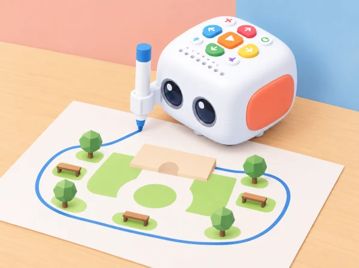

Com podem explicar un pati a algú que no el coneix i imaginar-hi activitats diferents? L'alumnat observa les zones, crea un plànol simbòlic i programa Tale-Bot perquè trace formes que representen espais possibles: un lloc tranquil, una zona de moviment o un espai per construir. El dibuix del robot fa visible com una seqüència de moviments es transforma en una línia; les peces i pictogrames completen el significat del mapa.
La situació parteix de la possibilitat de dibuix de Tale-Bot Pro amb el suport i els retoladors compatibles descrits pel fabricant. Abans d'impartir-la, comproveu que el model del centre disposa dels accessoris corresponents i proveu la fixació, el paper i una ruta curta. Si no hi ha accessori o la superfície no és adequada, feu el mateix repte amb una fitxa que recorre el traç i després dibuixeu-lo a mà.
Prepareu Tale-Bot, el suport de retolador i retoladors rentables compatibles si el kit del centre els inclou, paper gran fixat a una superfície plana, formes de cartolina, pictogrames de zones i una tira visual amb les instruccions. Comproveu que el paper no es mogui i que les unions del suport no impedisquen avançar. Deixeu espai al voltant per observar sense acostar les mans a les rodes mentre el robot està en moviment.
Per a l'observació, useu una visita al pati en un moment tranquil o un plànol buit preparat pel docent. No fotografieu infants ni feu una classificació de qui utilitza cada zona. Recolliu característiques de l'espai —ombra, banc, zona oberta, recorregut— i pregunteu quines activitats podria permetre cadascuna.
Observació (8 min): feu una volta curta i localitzeu dues o tres zones sense fotografiar persones. Conversació (7 min): parleu de què permet cada lloc i quines condicions s'hi observen: ombra, soroll, espai per moure's o lloc per seure. Representació (7 min): trieu formes i pictogrames per al mapa. Tanqueu amb una pregunta de disseny, com ara «tenim un lloc tranquil i un recorregut que no travesse el joc?».
Sobre paper, construïu un plànol simbòlic amb tres zones. Amb cordill o peces, dibuixeu una forma gran —quadrat, rectangle o camí en L— i seguiu-la amb el dit. Ordeneu les instruccions de Tale-Bot utilitzant les targetes del kit. Abans d'executar, pregunteu: on comença?, quantes vegades repetirem el moviment?, on hauria d'acabar? Feu una passada simulada amb una fitxa de paper perquè el grup puga detectar errors sense haver d'esperar el robot.
Col·loqueu el retolador segons les instruccions del fabricant, poseu el robot al punt d'inici i executeu una seqüència curta. Observeu el traç i compareu-lo amb el model de cordill. Si un costat és massa llarg o el robot gira cap a una altra direcció, canvieu una sola instrucció i torneu a provar en un espai net del paper. Marqueu amb una targeta l'inici i el final. La precisió del traç no és l'únic objectiu: també es pot assolir descrivint l'ordre o identificant el canvi necessari.
Afegiu pictogrames a les formes dibuixades i expliqueu què representa cadascuna. Un altre equip rep el plànol sense explicació i intenta trobar-hi les zones. Escolteu què interpreta, afegiu una llegenda si és necessària i reviseu la proposta: hi ha una opció de descans?, un espai ampli?, un recorregut comprensible? No cal que totes les activitats estiguen representades ni afirmar que un disseny resol les necessitats de totes les persones; el producte és una maqueta inicial per conversar.
Roteu quatre responsabilitats: observador/a de l'espai, dissenyador/a del plànol, planificador/a de la seqüència i narrador/a de la prova. En grups grans, una parella pot seguir el traç amb una fitxa i una altra controlar la tira d'ordres. Accepteu que una persona contribuïsca assenyalant, triant entre dues formes, dictant una idea o observant el resultat sense manipular el robot.
Observeu si l'alumnat prediu una part del traç, associa l'ordre amb un resultat, revisa una instrucció amb una raó i escolta una interpretació diferent. Useu preguntes concretes: «Quina forma volíem?», «Què ha dibuixat?», «Quina instrucció canviaries?» i «Com ho sabrà una altra classe?». Recolliu notes o dibuixos; no cal enregistrar l'alumnat.
Useu paper gran amb contrast alt, formes tàctils, fletxes àmplies i una seqüència reduïda. Oferiu alternatives a l'escriptura manual i a la manipulació del robot. Per ampliar, planifiqueu una mateixa forma amb dos ordres diferents, mesureu aproximadament el perímetre amb blocs o creeu una ruta que connecte zones sense travessar la zona tranquil·la. En cada cas, feu explícit que es tracta d'un model simplificat.
Matatalab descriu per a Tale-Bot Pro les funcions de dibuix, el suport i els retoladors, juntament amb activitats de seqüència i creació (informació oficial del producte). Aquesta proposta transforma eixa possibilitat en un repte propi d'observació i representació del pati; el mapa, els pictogrames i els criteris són originals i no reutilitzen materials gràfics oficials.